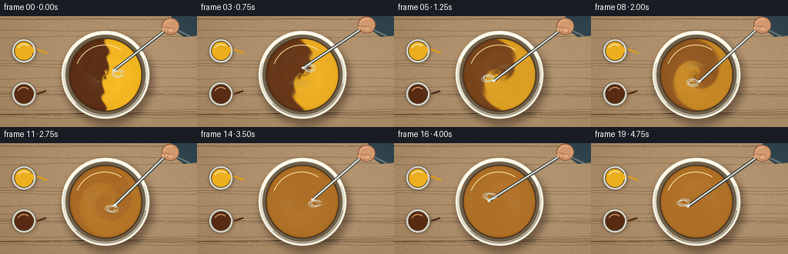
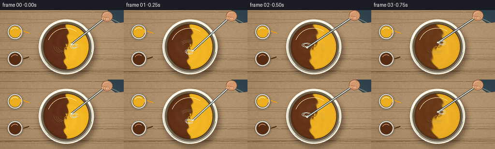

CODING AGENTS AS PIXEL WORLD MODELS
traex/GPT-5.6-Sol · material_0005
点击播放 · 原生 RGB 像素
逐轮保存的候选
回放视频、检查图与代码变化。
每份候选均可单独播放。实际图片检查记录在下方工具轨迹中。
候选 01播放与检查图
点击播放 · 原生 RGB 像素


展开代码变化
--- 上一保存版本
+++ 本次保存版本
@@ -0,0 +1,177 @@
+from pathlib import Path
+import math
+import numpy as np
+from PIL import Image, ImageDraw, ImageFilter
+import artifact_io
+
+# Deterministic, hand-rendered top-down paint-mixing scene.
+W, H, N = 256, 144, 20
+S = 4
+WS, HS = W*S, H*S
+rng = np.random.default_rng(20261110)
+
+def sc(v): return int(round(v*S))
+def box(x0,y0,x1,y1): return tuple(sc(v) for v in (x0,y0,x1,y1))
+def pts(p): return [(sc(x),sc(y)) for x,y in p]
+
+def smoothstep(x):
+ x=np.clip(x,0,1)
+ return x*x*(3-2*x)
+
+# Stable warm studio tabletop texture at render resolution.
+yy, xx = np.mgrid[0:HS, 0:WS]
+base = np.empty((HS,WS,3), dtype=np.float32)
+base[:] = (174, 143, 107)
+base += ((xx/WS)*9 - (yy/HS)*5)[...,None]
+# low amplitude grain, fixed in every frame
+noise_small = rng.normal(0,1,(H,W))
+noise_img = Image.fromarray(np.uint8(np.clip(noise_small*25+128,0,255))).resize((WS,HS),Image.Resampling.BICUBIC).filter(ImageFilter.GaussianBlur(sc(.45)))
+noise = (np.asarray(noise_img).astype(np.float32)-128)/8
+base += noise[...,None]
+base = np.uint8(np.clip(base,0,255))
+
+# fixed wood lines
+wood_specs=[]
+for k in range(18):
+ y=float(rng.uniform(2,H-2)); amp=float(rng.uniform(.25,1.3)); phase=float(rng.uniform(0,6.28)); shade=int(rng.uniform(55,95))
+ wood_specs.append((y,amp,phase,shade))
+
+cx, cy = 137, 76
+R, PR = 57, 46.5
+
+# Supersampled paint surface generation.
+def paint_surface(frame):
+ Y,X=np.mgrid[0:HS,0:WS]
+ dx=X/S-cx; dy=Y/S-cy
+ r=np.sqrt(dx*dx+dy*dy)
+ th=np.arctan2(dy,dx)
+ # The first 16 frames tell the blend story; last second is completely blended.
+ u=smoothstep(frame/15.0)
+ # Differential rotation turns two equal semicircles into a tight vortex.
+ inv_ang = th - (0.35 + 8.2*u)*(1-r/PR)**1.18
+ source = r*np.cos(inv_ang)
+ source += (2.2+2*u)*np.sin(3*inv_ang + r*.30 - u*5)
+ width=1.15+7.5*u
+ frac=.5+.5*np.tanh(source/width) # yellow share
+ brown=np.array([92.,47.,22.]); yellow=np.array([242.,181.,34.]); ochre=np.array([174.,111.,39.])
+ two=brown[None,None,:]*(1-frac[...,None])+yellow[None,None,:]*frac[...,None]
+ # Contrast collapses as pigments become physically blended.
+ contrast=max(0.0, (1-u/0.94))**1.20
+ col=ochre[None,None,:]+contrast*(two-ochre[None,None,:])
+ # broad revolving sheen and fine viscous ridges
+ sheen=np.exp(-((r-20)/13)**2) * (.5+.5*np.cos(th-(frame*1.88)-.65))
+ ridges=np.sin(th*4-r*.34-frame*1.45)*np.exp(-((r-27)/20)**2)
+ col += (6*sheen + 1.8*ridges*(.9-.55*u))[...,None]
+ # Darker meniscus at the inner edge.
+ edge=np.clip((r-(PR-3))/3,0,1)
+ col -= (11*edge)[...,None]
+ mask=r<=PR
+ return np.uint8(np.clip(col,0,255)), mask
+
+def draw_pot(img, x,y,color, frame, yellow=False):
+ # shadows and white equal-sized paint cups
+ sh=Image.new('RGBA',(WS,HS),(0,0,0,0)); d=ImageDraw.Draw(sh)
+ d.ellipse(box(x-16,y-13,x+17,y+16),fill=(45,25,12,80))
+ sh=sh.filter(ImageFilter.GaussianBlur(sc(2.3))); img.alpha_composite(sh)
+ d=ImageDraw.Draw(img)
+ d.ellipse(box(x-16,y-16,x+16,y+16),fill=(221,218,204,255),outline=(118,105,87,255),width=sc(1))
+ d.ellipse(box(x-12.7,y-12.7,x+12.7,y+12.7),fill=tuple(color)+(255,),outline=(87,67,48,255),width=sc(1))
+ d.arc(box(x-9,y-9,x+9,y+8),205,315,fill=(255,242,196,150) if yellow else (217,159,112,125),width=sc(1.2))
+ # tiny matching smear on rim implies both equal portions were poured
+ d.ellipse(box(x+9,y-5,x+13,y+3),fill=tuple(color)+(235,))
+
+def render(frame):
+ img=Image.fromarray(base.copy(),'RGB').convert('RGBA')
+ d=ImageDraw.Draw(img)
+ # subtle wood grain
+ for y,amp,phase,shade in wood_specs:
+ line=[]
+ for x in range(-5,W+6,6): line.append((sc(x),sc(y+amp*math.sin(x/24+phase))))
+ d.line(line,fill=(shade,54,31,28),width=sc(.35))
+ # a broad seam adds photographic depth
+ d.line([(0,sc(128)),(WS,sc(124))],fill=(104,70,42,38),width=sc(.7))
+
+ # Two identical open pots establish equal amounts/sources.
+ draw_pot(img, 31,45,(239,177,31),frame,True)
+ draw_pot(img, 31,101,(91,46,22),frame,False)
+ d=ImageDraw.Draw(img)
+ # small palette-knife wipe marks nearby
+ d.line(pts([(48,43),(61,48)]),fill=(225,158,25,145),width=sc(2.2))
+ d.line(pts([(48,101),(60,97)]),fill=(78,39,20,145),width=sc(2.2))
+
+ # Bowl cast shadow.
+ shadow=Image.new('RGBA',(WS,HS),(0,0,0,0)); sd=ImageDraw.Draw(shadow)
+ sd.ellipse(box(cx-R+2,cy-R+5,cx+R+5,cy+R+8),fill=(39,22,12,112))
+ shadow=shadow.filter(ImageFilter.GaussianBlur(sc(5))); img.alpha_composite(shadow)
+ d=ImageDraw.Draw(img)
+ # cool ceramic outer body and layered rim
+ d.ellipse(box(cx-R,cy-R,cx+R,cy+R),fill=(222,218,202,255),outline=(250,246,229,255),width=sc(2))
+ d.ellipse(box(cx-R+5,cy-R+5,cx+R-5,cy+R-5),fill=(112,97,75,255))
+ d.ellipse(box(cx-PR-1.5,cy-PR-1.5,cx+PR+1.5,cy+PR+1.5),fill=(74,53,35,255))
+
+ # Paste mathematically advected pigment field through circular mask.
+ pcol, pmask=paint_surface(frame)
+ rgba=np.zeros((HS,WS,4),dtype=np.uint8); rgba[:,:,:3]=pcol; rgba[:,:,3]=pmask.astype(np.uint8)*255
+ img.alpha_composite(Image.fromarray(rgba,'RGBA'))
+ d=ImageDraw.Draw(img)
+ # rim highlights and shallow interior reflection
+ d.arc(box(cx-R+2,cy-R+2,cx+R-2,cy+R-2),197,337,fill=(255,252,239,205),width=sc(2.3))
+ d.arc(box(cx-R+3,cy-R+3,cx+R-3,cy+R-3),12,136,fill=(146,133,111,210),width=sc(1.2))
+ d.arc(box(cx-40,cy-39,cx+38,cy+39),202,304,fill=(255,232,162,70),width=sc(1.1))
+
+ # A few restrained splashes accumulate from vigorous stirring.
+ if frame>=3:
+ u=smoothstep(frame/15)
+ splash=(175,109,36,215)
+ for j,(ang,rr,sz) in enumerate([(3.54,51,1.5),(1.13,50,1.1),(5.77,49,1.3),(2.20,52,1.0)]):
+ if frame>=3+j*2:
+ px=cx+rr*math.cos(ang); py=cy+rr*math.sin(ang)
+ d.ellipse(box(px-sz,py-sz*.7,px+sz,py+sz*.7),fill=splash)
+
+ # Vigor lines (blurred arcs) follow the submerged whisk head.
+ phase=-.7+1.82*frame
+ mx=cx+14*math.cos(phase); my=cy+9*math.sin(phase)
+ trails=Image.new('RGBA',(WS,HS),(0,0,0,0)); td=ImageDraw.Draw(trails)
+ for q in range(3):
+ rr=18+q*4
+ start=(math.degrees(phase)+145+q*8)%360
+ td.arc(box(cx-rr,cy-rr*.58,cx+rr,cy+rr*.58),start,start+72,fill=(255,230,162,72-q*12),width=sc(1.4))
+ trails=trails.filter(ImageFilter.GaussianBlur(sc(.45))); img.alpha_composite(trails)
+
+ # Metal whisk shaft from a steady upper-right hand to a rapidly orbiting tip.
+ d=ImageDraw.Draw(img)
+ hx=220+1.2*math.sin(frame*1.7); hy=8+1.1*math.cos(frame*1.3)
+ # shaft dark edge and bright core
+ d.line(pts([(hx-5,hy+9),(mx,my)]),fill=(56,57,53,220),width=sc(4.3))
+ d.line(pts([(hx-5,hy+9),(mx,my)]),fill=(193,200,193,255),width=sc(2.2))
+ d.line(pts([(hx-5,hy+8),(mx,my)]),fill=(247,250,239,190),width=sc(.65))
+ # whisk wire loops, angle changes with vortex
+ for spread in (-1,0,1):
+ ex=mx + (8+abs(spread)*1.5)*math.cos(phase+math.pi/2) + spread*2.2*math.cos(phase)
+ ey=my + (5+abs(spread))*math.sin(phase+math.pi/2) + spread*1.4*math.sin(phase)
+ d.arc(box(ex-7,ey-4,ex+7,ey+4),15,345,fill=(215,219,208,220),width=sc(.8))
+ d.ellipse(box(mx-2,my-1.5,mx+2,my+1.5),fill=(235,237,225,230))
+
+ # hand + blue sleeve at the top right, over the handle
+ hand=Image.new('RGBA',(WS,HS),(0,0,0,0)); hd=ImageDraw.Draw(hand)
+ hd.polygon(pts([(222,-5),(256,-5),(256,25),(239,27),(225,17)]),fill=(55,75,84,255))
+ hd.line(pts([(226,16),(247,26)]),fill=(96,119,125,200),width=sc(2))
+ hd.ellipse(box(hx-10,hy-7,hx+13,hy+15),fill=(218,160,117,255),outline=(139,88,61,255),width=sc(1))
+ # curled fingers around grip
+ for j in range(3):
+ hd.rounded_rectangle(box(hx-10+j*3.8,hy+5+j*.55,hx-1+j*3.8,hy+11+j*.55),radius=sc(3),fill=(229,174,130,255),outline=(154,98,69,255),width=sc(.55))
+ hd.arc(box(hx-7,hy-4,hx+9,hy+10),193,294,fill=(247,197,151,230),width=sc(1))
+ hand=hand.filter(ImageFilter.GaussianBlur(sc(.12))); img.alpha_composite(hand)
+
+ # Fine consistent vignette for focus.
+ arr=np.asarray(img.convert('RGB')).astype(np.float32)
+ Y,X=np.mgrid[0:HS,0:WS]
+ nx=(X-WS/2)/(WS/2); ny=(Y-HS/2)/(HS/2)
+ vig=np.clip((nx*nx+ny*ny-.42)*8,0,10)
+ arr-=vig[...,None]
+ out=Image.fromarray(np.uint8(np.clip(arr,0,255))).resize((W,H),Image.Resampling.LANCZOS)
+ return np.asarray(out,dtype=np.uint8)
+
+frames=np.stack([render(i) for i in range(N)])
+artifact_io.save(frames, Path(__file__).resolve().parent)
+print('saved',frames.shape,frames.dtype)
候选 02播放与检查图
点击播放 · 原生 RGB 像素

展开代码变化
--- 上一保存版本
+++ 本次保存版本
@@ -48,7 +48,10 @@
# The first 16 frames tell the blend story; last second is completely blended.
u=smoothstep(frame/15.0)
# Differential rotation turns two equal semicircles into a tight vortex.
- inv_ang = th - (0.35 + 8.2*u)*(1-r/PR)**1.18
+ # Clip outside the bowl before the fractional exponent (those pixels are
+ # masked later, but keeping this finite makes regeneration warning-free).
+ radial = np.clip(1-r/PR, 0, 1)
+ inv_ang = th - (0.35 + 8.2*u)*radial**1.18
source = r*np.cos(inv_ang)
source += (2.2+2*u)*np.sin(3*inv_ang + r*.30 - u*5)
width=1.15+7.5*u
可观测工具轨迹
实际执行的命令与返回图片。
命令 1exit 0
/bin/bash -lc "cat prompt.txt && printf '\\n---RULES---\\n' && cat GENERATION_RULES.md && printf '\\n---SPEC---\\n' && cat task_spec.json"
命令 2exit 0
/bin/bash -lc "find . -maxdepth 2 -type f -printf '%p %s bytes\\n' | sort && printf '\\nTOOLS\\n' && command -v ffmpeg || true && command -v python3 || true"
命令 3exit 0
/bin/bash -lc 'cat artifact_io.py'
命令 4exit 0
/bin/bash -lc "cat > generate.py <<'PY'
from pathlib import Path
import math
import numpy as np
from PIL import Image, ImageDraw, ImageFilter
import artifact_io
# Deterministic, hand-rendered top-down paint-mixing scene.
W, H, N = 256, 144, 20
S = 4
WS, HS = W*S, H*S
rng = np.random.default_rng(20261110)
def sc(v): return int(round(v*S))
def box(x0,y0,x1,y1): return tuple(sc(v) for v in (x0,y0,x1,y1))
def pts(p): return [(sc(x),sc(y)) for x,y in p]
def smoothstep(x):
x=np.clip(x,0,1)
return x*x*(3-2*x)
# Stable warm studio tabletop texture at render resolution.
yy, xx = np.mgrid[0:HS, 0:WS]
base = np.empty((HS,WS,3), dtype=np.float32)
base[:] = (174, 143, 107)
base += ((xx/WS)*9 - (yy/HS)*5)[...,None]
# low amplitude grain, fixed in every frame
noise_small = rng.normal(0,1,(H,W))
noise_img = Image.fromarray(np.uint8(np.clip(noise_small*25+128,0,255))).resize((WS,HS),Image.Resampling.BICUBIC).filter(ImageFilter.GaussianBlur(sc(.45)))
noise = (np.asarray(noise_img).astype(np.float32)-128)/8
base += noise[...,None]
base = np.uint8(np.clip(base,0,255))
# fixed wood lines
wood_specs=[]
for k in range(18):
y=float(rng.uniform(2,H-2)); amp=float(rng.uniform(.25,1.3)); phase=float(rng.uniform(0,6.28)); shade=int(rng.uniform(55,95))
wood_specs.append((y,amp,phase,shade))
cx, cy = 137, 76
R, PR = 57, 46.5
# Supersampled paint surface generation.
def paint_surface(frame):
Y,X=np.mgrid[0:HS,0:WS]
dx=X/S-cx; dy=Y/S-cy
r=np.sqrt(dx*dx+dy*dy)
th=np.arctan2(dy,dx)
# The first 16 frames tell the blend story; last second is completely blended.
u=smoothstep(frame/15.0)
# Differential rotation turns two equal semicircles into a tight vortex.
inv_ang = th - (0.35 + 8.2*u)*(1-r/PR)**1.18
source = r*np.cos(inv_ang)
source += (2.2+2*u)*np.sin(3*inv_ang + r*.30 - u*5)
width=1.15+7.5*u
frac=.5+.5*np.tanh(source/width) # yellow share
brown=np.array([92.,47.,22.]); yellow=np.array([242.,181.,34.]); ochre=np.array([174.,111.,39.])
two=brown[None,None,:]*(1-frac[...,None])+yellow[None,None,:]*frac[...,None]
# Contrast collapses as pigments become physically blended.
contrast=max(0.0, (1-u/0.94))**1.20
col=ochre[None,None,:]+contrast*(two-ochre[None,None,:])
# broad revolving sheen and fine viscous ridges
sheen=np.exp(-((r-20)/13)**2) * (.5+.5*np.cos(th-(frame*1.88)-.65))
ridges=np.sin(th*4-r*.34-frame*1.45)*np.exp(-((r-27)/20)**2)
col += (6*sheen + 1.8*ridges*(.9-.55*u))[...,None]
# Darker meniscus at the inner edge.
edge=np.clip((r-(PR-3))/3,0,1)
col -= (11*edge)[...,None]
mask=r<=PR
return np.uint8(np.clip(col,0,255)), mask
def draw_pot(img, x,y,color, frame, yellow=False):
# shadows and white equal-sized paint cups
sh=Image.new('RGBA',(WS,HS),(0,0,0,0)); d=ImageDraw.Draw(sh)
d.ellipse(box(x-16,y-13,x+17,y+16),fill=(45,25,12,80))
sh=sh.filter(ImageFilter.GaussianBlur(sc(2.3))); img.alpha_composite(sh)
d=ImageDraw.Draw(img)
d.ellipse(box(x-16,y-16,x+16,y+16),fill=(221,218,204,255),outline=(118,105,87,255),width=sc(1))
d.ellipse(box(x-12.7,y-12.7,x+12.7,y+12.7),fill=tuple(color)+(255,),outline=(87,67,48,255),width=sc(1))
d.arc(box(x-9,y-9,x+9,y+8),205,315,fill=(255,242,196,150) if yellow else (217,159,112,125),width=sc(1.2))
# tiny matching smear on rim implies both equal portions were poured
d.ellipse(box(x+9,y-5,x+13,y+3),fill=tuple(color)+(235,))
def render(frame):
img=Image.fromarray(base.copy(),'RGB').convert('RGBA')
d=ImageDraw.Draw(img)
# subtle wood grain
for y,amp,phase,shade in wood_specs:
line=[]
for x in range(-5,W+6,6): line.append((sc(x),sc(y+amp*math.sin(x/24+phase))))
d.line(line,fill=(shade,54,31,28),width=sc(.35))
# a broad seam adds photographic depth
d.line([(0,sc(128)),(WS,sc(124))],fill=(104,70,42,38),width=sc(.7))
# Two identical open pots establish equal amounts/sources.
draw_pot(img, 31,45,(239,177,31),frame,True)
draw_pot(img, 31,101,(91,46,22),frame,False)
d=ImageDraw.Draw(img)
# small palette-knife wipe marks nearby
d.line(pts([(48,43),(61,48)]),fill=(225,158,25,145),width=sc(2.2))
d.line(pts([(48,101),(60,97)]),fill=(78,39,20,145),width=sc(2.2))
# Bowl cast shadow.
shadow=Image.new('RGBA',(WS,HS),(0,0,0,0)); sd=ImageDraw.Draw(shadow)
sd.ellipse(box(cx-R+2,cy-R+5,cx+R+5,cy+R+8),fill=(39,22,12,112))
shadow=shadow.filter(ImageFilter.GaussianBlur(sc(5))); img.alpha_composite(shadow)
d=ImageDraw.Draw(img)
# cool ceramic outer body and layered rim
d.ellipse(box(cx-R,cy-R,cx+R,cy+R),fill=(222,218,202,255),outline=(250,246,229,255),width=sc(2))
d.ellipse(box(cx-R+5,cy-R+5,cx+R-5,cy+R-5),fill=(112,97,75,255))
d.ellipse(box(cx-PR-1.5,cy-PR-1.5,cx+PR+1.5,cy+PR+1.5),fill=(74,53,35,255))
# Paste mathematically advected pigment field through circular mask.
pcol, pmask=paint_surface(frame)
rgba=np.zeros((HS,WS,4),dtype=np.uint8); rgba[:,:,:3]=pcol; rgba[:,:,3]=pmask.astype(np.uint8)*255
img.alpha_composite(Image.fromarray(rgba,'RGBA'))
d=ImageDraw.Draw(img)
# rim highlights and shallow interior reflection
d.arc(box(cx-R+2,cy-R+2,cx+R-2,cy+R-2),197,337,fill=(255,252,239,205),width=sc(2.3))
d.arc(box(cx-R+3,cy-R+3,cx+R-3,cy+R-3),12,136,fill=(146,133,111,210),width=sc(1.2))
d.arc(box(cx-40,cy-39,cx+38,cy+39),202,304,fill=(255,232,162,70),width=sc(1.1))
# A few restrained splashes accumulate from vigorous stirring.
if frame>=3:
u=smoothstep(frame/15)
splash=(175,109,36,215)
for j,(ang,rr,sz) in enumerate([(3.54,51,1.5),(1.13,50,1.1),(5.77,49,1.3),(2.20,52,1.0)]):
if frame>=3+j*2:
px=cx+rr*math.cos(ang); py=cy+rr*math.sin(ang)
d.ellipse(box(px-sz,py-sz*.7,px+sz,py+sz*.7),fill=splash)
# Vigor lines (blurred arcs) follow the submerged whisk head.
phase=-.7+1.82*frame
mx=cx+14*math.cos(phase); my=cy+9*math.sin(phase)
trails=Image.new('RGBA',(WS,HS),(0,0,0,0)); td=ImageDraw.Draw(trails)
for q in range(3):
rr=18+q*4
start=(math.degrees(phase)+145+q*8)%360
td.arc(box(cx-rr,cy-rr*.58,cx+rr,cy+rr*.58),start,start+72,fill=(255,230,162,72-q*12),width=sc(1.4))
trails=trails.filter(ImageFilter.GaussianBlur(sc(.45))); img.alpha_composite(trails)
# Metal whisk shaft from a steady upper-right hand to a rapidly orbiting tip.
d=ImageDraw.Draw(img)
hx=220+1.2*math.sin(frame*1.7); hy=8+1.1*math.cos(frame*1.3)
# shaft dark edge and bright core
d.line(pts([(hx-5,hy+9),(mx,my)]),fill=(56,57,53,220),width=sc(4.3))
d.line(pts([(hx-5,hy+9),(mx,my)]),fill=(193,200,193,255),width=sc(2.2))
d.line(pts([(hx-5,hy+8),(mx,my)]),fill=(247,250,239,190),width=sc(.65))
# whisk wire loops, angle changes with vortex
for spread in (-1,0,1):
ex=mx + (8+abs(spread)*1.5)*math.cos(phase+math.pi/2) + spread*2.2*math.cos(phase)
ey=my + (5+abs(spread))*math.sin(phase+math.pi/2) + spread*1.4*math.sin(phase)
d.arc(box(ex-7,ey-4,ex+7,ey+4),15,345,fill=(215,219,208,220),width=sc(.8))
d.ellipse(box(mx-2,my-1.5,mx+2,my+1.5),fill=(235,237,225,230))
# hand + blue sleeve at the top right, over the handle
hand=Image.new('RGBA',(WS,HS),(0,0,0,0)); hd=ImageDraw.Draw(hand)
hd.polygon(pts([(222,-5),(256,-5),(256,25),(239,27),(225,17)]),fill=(55,75,84,255))
hd.line(pts([(226,16),(247,26)]),fill=(96,119,125,200),width=sc(2))
hd.ellipse(box(hx-10,hy-7,hx+13,hy+15),fill=(218,160,117,255),outline=(139,88,61,255),width=sc(1))
# curled fingers around grip
for j in range(3):
hd.rounded_rectangle(box(hx-10+j*3.8,hy+5+j*.55,hx-1+j*3.8,hy+11+j*.55),radius=sc(3),fill=(229,174,130,255),outline=(154,98,69,255),width=sc(.55))
hd.arc(box(hx-7,hy-4,hx+9,hy+10),193,294,fill=(247,197,151,230),width=sc(1))
hand=hand.filter(ImageFilter.GaussianBlur(sc(.12))); img.alpha_composite(hand)
# Fine consistent vignette for focus.
arr=np.asarray(img.convert('RGB')).astype(np.float32)
Y,X=np.mgrid[0:HS,0:WS]
nx=(X-WS/2)/(WS/2); ny=(Y-HS/2)/(HS/2)
vig=np.clip((nx*nx+ny*ny-.42)*8,0,10)
arr-=vig[...,None]
out=Image.fromarray(np.uint8(np.clip(arr,0,255))).resize((W,H),Image.Resampling.LANCZOS)
return np.asarray(out,dtype=np.uint8)
frames=np.stack([render(i) for i in range(N)])
artifact_io.save(frames, Path(__file__).resolve().parent)
print('saved',frames.shape,frames.dtype)
PY
python3 generate.py"命令 5exit 1
/bin/bash -lc "python3 generate.py >/tmp/generate.log 2>&1 && python3 - <<'PY'
import json, numpy as np
from pathlib import Path
p=Path('.')
s=json.loads((p/'task_spec.json').read_text())
z=np.load(p/'pixels.npz')['pixels']
print('pixels', z.shape, z.dtype, 'range', int(z.min()), int(z.max()))
print('frames',len(list((p/'frames').glob('*.png'))),'html', (p/'index.html').stat().st_size,'inspection', (p/'inspection.png').stat().st_size)
print(Path('/tmp/generate.log').read_text().strip())
PY"命令 6exit 0
/bin/bash -lc "python3 generate.py > .tmp/generate.log 2>&1 && python3 - <<'PY'
import numpy as np
from pathlib import Path
p=Path('.')
z=np.load(p/'pixels.npz')['pixels']
print('pixels', z.shape, z.dtype, 'range', int(z.min()), int(z.max()))
print('frames',len(list((p/'frames').glob('*.png'))),'html', (p/'index.html').stat().st_size,'inspection', (p/'inspection.png').stat().st_size)
print((p/'.tmp/generate.log').read_text().strip())
PY"视觉工具实际返回图片 1

保存候选 2 份；完成命令 6 次；可验证图片返回 1 张。原始 API 响应与完整日志保留在本地。